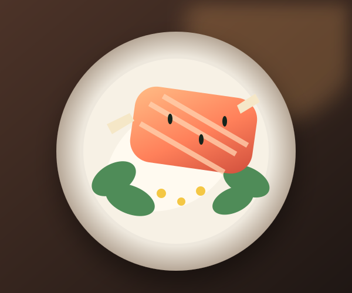

Capture organized
Matched automatically
Added to Miso Salmon Bowl
Your photo joined today’s cooking occasion—not a new dish.


Cook #9
13 source photos now
Why this match?Salmon · bowl · glaze · 94%
Matched automatically
Your photo joined today’s cooking occasion—not a new dish.

13 source photos now